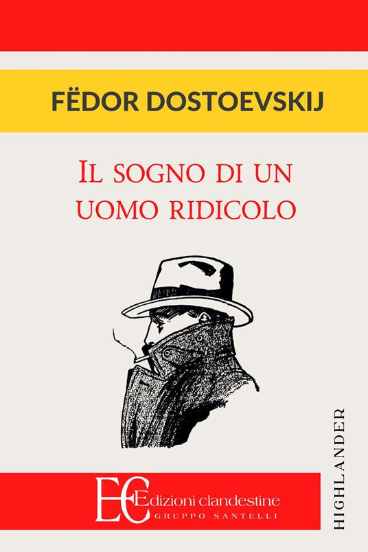

Un uomo, ormai convinto dell'assoluta insensatezza dell'esistenza, decide di togliersi la vita. Prima di riuscirci, però, si addormenta e fa un sogno che lo trasporta in un mondo parallelo, popolato da un'umanità ancora innocente e felice. Ciò che vede — e ciò che lui stesso finisce per corrompere — lo cambierà per sempre, trasformando la sua disperazione in un messaggio quasi profetico sull'amore per il prossimo.
Come titolo mi ha sempre attratta, tanto che era da mesi che desideravo averlo tra le mani. Poi l'ho trovato in edizione 2 in 1 insieme a La mite, e ne ho subito approfittato. L'ho letto in circa due giorni e mezzo, una storia dal tono decisamente introspettivo.
La prima pagina mi ha distrutta. Non è stato tanto cosa veniva detto, ma come — quel tono di voce del protagonista mi ha catturata a tal punto da rileggerla almeno tre volte in momenti diversi, come se ogni volta ci trovassi qualcosa di nuovo. Mi ha letteralmente paralizzata: sono andata avanti tutta d'un fiato, senza sottolineare nulla alla prima lettura.
Quello che mi ha colpita di più, andando avanti, è stato il contrasto tra il mondo perfetto che il protagonista sogna e la vita reale da cui proviene — una distanza che rende ancora più forte tutto ciò che il sogno gli rivela su se stesso e su quello che ha intorno.
Questo è esattamente il tipo di storia che amo: ho adorato il modo in cui è narrato, la struttura, il linguaggio.
"Sono un uomo ridicolo. Ora mi danno anche del pazzo. Sarebbe una promozione, se per loro non rimanessi comunque un uomo ridicolo."
"Mi sento triste perché essi non conoscono la verità, mentre io sì. Oh, che terribile peso è essere il solo a conoscere la verità!"
"I sogni sono mossi non dalla ragione, ma dal desiderio, non dalla testa, ma dal cuore."